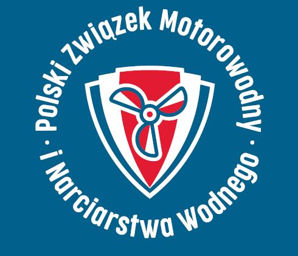
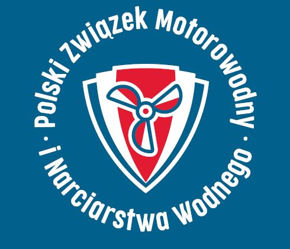
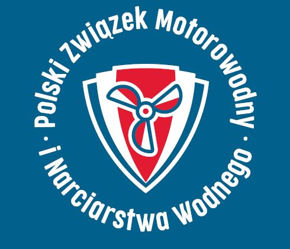

Klub Motorowodny Borne Sulinowo
Instruktor żeglarstwa i motorowodniactwa w Bornem Sulinowie

Instruktor żeglarstwa i motorowodniactwa w Bornem Sulinowie
Klub Motorowodny Borne Sulinowo to organizacja promująca aktywności wodne i żeglarskie. Naszym celem jest rozwijanie pasji do sportów wodnych poprzez kursy, szkolenia i wydarzenia.